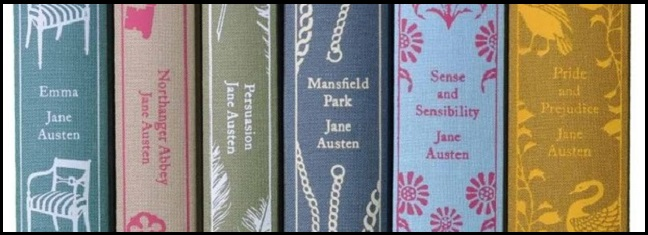

Welcome to my webpage about Jane Austen.
Feel free to explore information about her novels.
To find out more go to Official JA page.
Jane's Novels
Jane wrote a few complete novels, some unfinished ones, letters and sketches.
- Emma
- Of all Austen’s novels, Emma is the most consistently comic in tone. It centres on Emma Woodhouse, a
wealthy,
pretty,
self-satisfied young woman who indulges herself with meddlesome and unsuccessful attempts at matchmaking
among
her friends
and neighbours. After a series of humiliating errors, a chastened Emma finds her destiny in marriage to the
mature and
protective George Knightley, a neighbouring squire who had been her mentor and friend.
- Pride and Prejudice
- Mansfield Park
- Northanger Abbey
- Sense and Sensibility
- novel by Jane Austen, published anonymously in three volumes in 1811. The 1995 film adaptation—starring
Emma
Thompson,
Kate Winslet, and Hugh Grant—was a critical and commercial success and earned seven Academy Award
nominations
(winning one for Emma Thompson for best screenplay). The hit film spurred a resurgence of interest in the
novels
of Jane Austen and in period films in general, and it helped to establish the reputation of Taiwanese
director
Ang Lee.
Jane's Life
Jane Austen was born in the Hampshire village of Steventon, where her father, the Reverend George Austen,
was rector. She was the second daughter and seventh child in a family of eight—six boys and two girls.
Her closest companion throughout her life was her elder sister, Cassandra; neither Jane nor Cassandra married.
Their father was a scholar who encouraged the love of learning in his children. His wife,
Cassandra (née Leigh), was a woman of ready wit, famed for her impromptu verses and stories.
The great family amusement was acting.